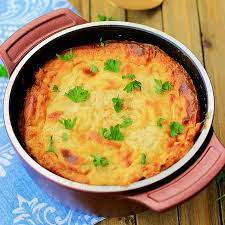

Tave Kosi

The favorite Albanian dish among old people
It's a marmite thing. Some love it and some hate it
Ingredients
For the lamb
- 600g of diced lamb
- 20g of butter
- 2 Tbsp of Olive Oil
- 70g of rice
- 2 tbsp of orgeno
- 450ml of Boiling water
- 2 cloves of diced garlic
- salt
- pepper
For the roux
- 50g of butter
- 2 tbsp of flour
for the yogurt
- 750g of greek yogurt
- 6 eggs
- salt
- pepper
Steps
- In a large pan (with a lid) melt the butter and olive oil together then add the diced lamb. Brown the lamb on a medium heat, this will take around 5 minutes.
- Add the garlic, oregano, 300ml of water and season with salt and pepper. Mix well before covering with the lid. Leave to simmer for 50 minutes mixing a couple of times ensuring the lamb doesn’t start to burn.
- The juices should have nearly all boiled away so another 150ml of water should be added along with the rice. Mix altogether, bring to the boil, place the lid on and leave for just 10 minutes. It’s advised to check at around 8 minutes – you want the liquid to be evaporated with just moist coating of oily water left over the lamb and rice.
- Place the lamb and rice into a casserole dish, the mixture should fully cover the base and have at least 2 inches spare for the yogurt. Alternatively you can split into four ceramic bowls.
- In a small saucepan melt the butter over a medium heat and then add two tablespoons of flour while continuously stirring for two minutes (add a little extra flour if needed). The roux should not be thick but not too runny, the colour will darken slightly. Pour the roux into a bowl and keep to one side.
- In a mixing bowl add the yogurt, eggs and season with salt and pepper. Mix together then add the roux continuing to mix fast for a minute to ensure the roux and yogurt are thoroughly combined.
- Pour the yogurt mixture over the baked lamb and rice and sprinkle on a little oregano.
- Place on the bottom shelf of the oven on 180 degrees for 35 minutes then move it up to the middle for a further 10 minutes. The Tavë kosi is ready when the yogurt has risen up high and a golden crust formed.
- Leave to cool for 5 – 10 minutes before serving.